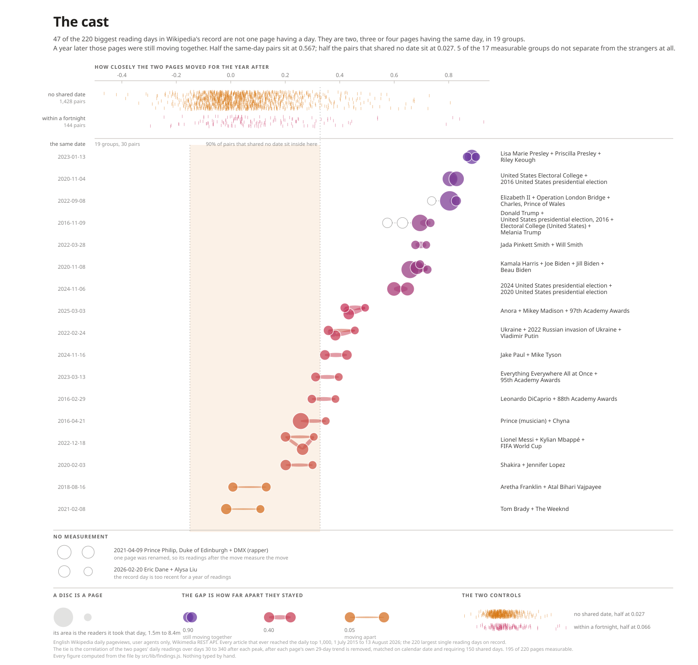
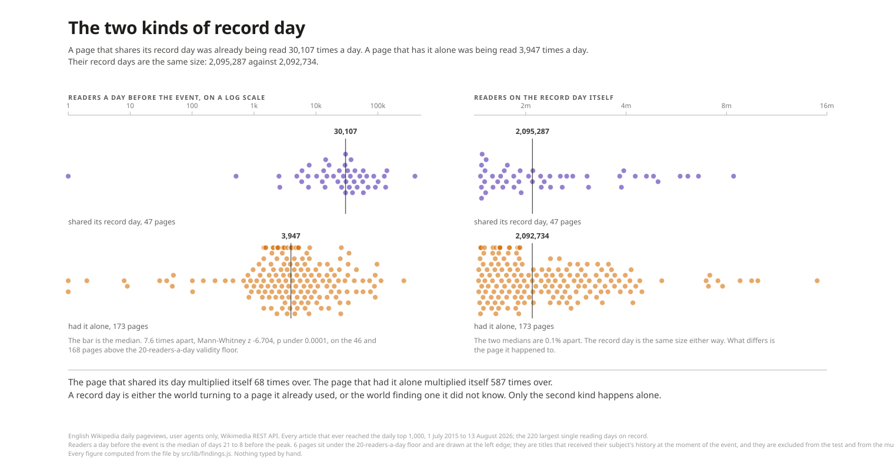
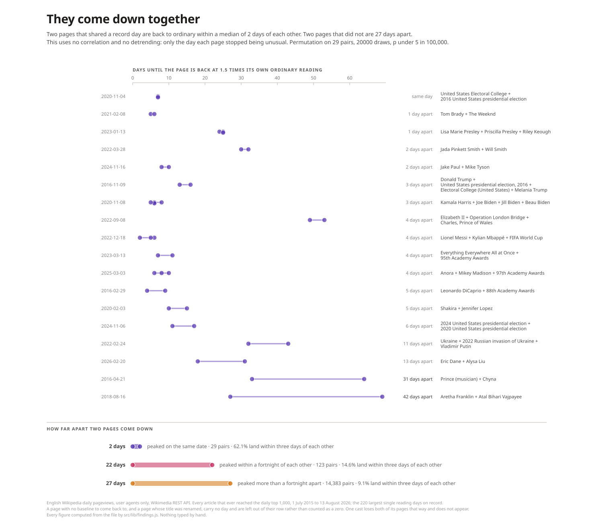
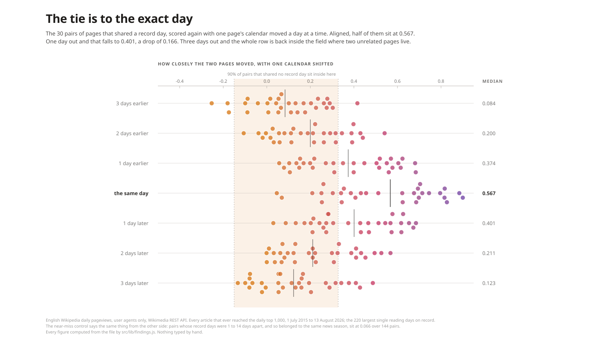

The Cast: hero and three supporting marks
Real data, rebuilt by node .claude/plans/2026-08-28-cast-marks/build.mjs from data/census/cast.json. Standalone renders. No page.
The cast. the nineteen constellations on the ruler that measures them
The two kinds of record day. the page that shares its day was already being read
They come down together. no correlation, no detrending: only the day each page stopped being unusual
The tie is to the exact day. the same pairs scored again with one calendar shifted